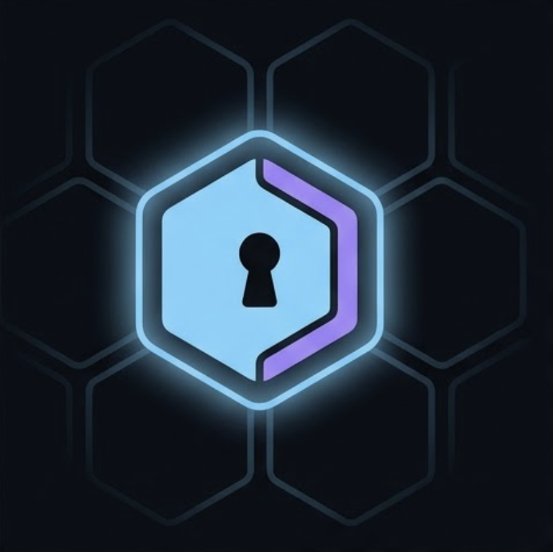

TesseraYour agent needs the OpenAI / GitHub / Stripe key to do its job. You don't want a prompt-injected model exfiltrating it, an MCP server logging it, or a runaway loop running up a $4k bill before you notice.
Tessera is a local proxy. Give the agent a disposable token instead — bound to one API, one policy, one TTL. Revoke any time. The real key is never exposed to anything reachable by the agent.
Same agent code. One swapped string.
const openai = new OpenAI({
apiKey: process.env.OPENAI_API_KEY,
// ^^^^^^^^^^^^^^^^^^^^^^^^^^^^
// Visible to: every tool call, every
// MCP server, every stack trace, every
// log line. Lifetime: forever, until
// you remember to rotate it.
});const openai = new OpenAI({
apiKey: process.env.PXY_TOKEN,
baseURL: "http://127.0.0.1:8080/u/openai",
// Token is bound to:
// one upstream (openai)
// one Rego policy (chat-only)
// 1 hour TTL
// Revoke anytime from the desktop UI.
});Three things devs build with Tessera on day one.
Hand Claude Code a 30-minute token that can only GET issues on one repo. Even if a prompt tells it to delete a branch, the policy denies the request before the proxy ever resolves your PAT.
policy: github-readonly · ttl: 30min
An MCP server you didn't write needs your OpenAI key. Don't paste it. Mint a token scoped to /v1/chat/completions, hand that to the MCP server. If it tries to hit the embeddings endpoint or fine-tune API, audit log records the deny.
policy: chat-only · ttl: 8h
Agent left running over the weekend? Click "Revoke" in the desktop UI. Every child token it minted dies cascade-style on the next request. No upstream key rotation, no SaaS dashboard, no waiting.
latency: instant · scope: all children
Agent sends its pxy_… token. Tessera validates, runs the policy, looks up the real
credential live from your password manager, swaps the header, forwards. Guards in red.
Every request crosses three checkpoints before a real credential is even resolved.
Plaintext token is SHA-256'd and looked up. Constant-time compare. Parent chain walked — if any ancestor is revoked, request fails fast.
Rego policy compiles once, evaluates per request. Decides on method, path, query, token label, parent chain. Encrypted at rest with the DEK.
Inbound Authorization / Cookie / Proxy-Authorization stripped before the reverse proxy runs. Real credential injected by the Director only.
If the DEK isn't loaded (Tessera locked), every data-plane request returns 503 immediately. No accidental exposure during a restart.
Every request — allow or deny — appends a JSON event with token id, decision, reason, latency. File-rotated. Streamed live to the desktop UI.
Admin API is mode 0600 — only the OS user reaches it. macOS desktop app + Keychain integration for the bootstrap passphrase.
Four commands. Real upstream creds stay in your password manager; the agent only ever sees a pxy_… token.
# 1. Build
make build
# 2. Bootstrap keystore (one time)
./tessera-cli bootstrap
# 3. Start the proxy
UPSTREAM_TOKEN=ghp_real_secret ./tessera &
# 4. Unlock + mint a token via the macOS UI
# (or tessera-cli unlock + token mint)# 5. Hit the proxy as your AI agent would
curl -H "Authorization: Bearer pxy_…" \
http://127.0.0.1:8080/u/github/repos/acme/widgets/issues
# Tessera swaps pxy_… for ghp_real_secret
# OPA policy gates the call
# audit event lands in ~/.tessera/audit.logCascade-revoke a parent token and every child it minted is dead the next request. No API-side key rotation needed.
A parent token can mint a child with a strict subset policy + shorter TTL. Hand the child to one agent for one task.
Define a read-only Rego, a write Rego, an admin Rego — all scoped to the same upstream and picked at token mint time. OPA runs every request: path globs, method allowlists, request-shape conditions.
SQLite. Policies AEAD-encrypted with XChaCha20-Poly1305 under a DEK that's only unwrapped by passphrase at runtime.
1Password, Doppler, Vault, plain env — all resolved live, TTL-cached, single-flighted. No upstream key ever hits disk.
Go server + Go CLI + Tauri macOS UI. ~15 MB binaries. No SaaS. No cloud. Localhost or your own box.